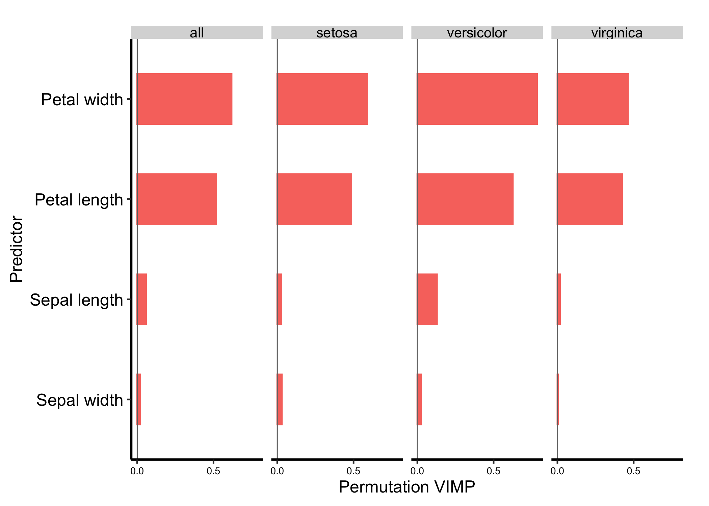

Once a forest predicts adequately, a co-author usually asks which variables carry that prediction. Permutation variable importance (VIMP) answers by breaking one predictor’s information in the OOB data and measuring how much prediction error changes.
That is a model question. VIMP is not an effect size, does not give the direction of association, and does not show that a variable causes the outcome. Correlated predictors can share predictive information, so permuting one may redistribute or understate the importance we would see if it stood alone.
28.2 Fit a classification forest
We again use iris so the returned object exposes both global and class-specific VIMP. importance = TRUE asks rfsrc() to retain permutation importance. The bounded 300-tree fit is for teaching; a study analysis should verify both the error trajectory and the ranking’s stability across an adequate forest.
set.seed(20260828)rf <-rfsrc( Species ~ .,data = iris,ntree =300,importance =TRUE)rf
Sample size: 150
Frequency of class labels: setosa=50, versicolor=50, virginica=50
Number of trees: 300
Forest terminal node size: 1
Average no. of terminal nodes: 9.5433
No. of variables tried at each split: 2
Total no. of variables: 4
Resampling used to grow trees: swor
Resample size used to grow trees: 95
Analysis: RF-C
Family: class
Splitting rule: gini *random*
Number of random split points: 10
(OOB) Brier score: 0.02448324
(OOB) Normalized Brier score: 0.11017457
(OOB) AUC: 0.9937
(OOB) Log-loss: 0.12563704
(OOB) Requested performance error: 0.05333333, 0.02, 0.06, 0.08
Confusion matrix:
predicted
observed setosa versicolor virginica class.error
setosa 49 1 0 0.02
versicolor 0 47 3 0.06
virginica 0 4 46 0.08
(OOB) Misclassification rate: 0.05333333
Random-classifier baselines (uniform):
Brier: 0.22222222 Normalized Brier: 1 Log-loss: 1.09861229
28.3 Build and inspect it
vimp_dta <-gg_vimp(rf)vimp_dta
<gg_vimp> from randomForestSRC | family: class | ntree: 300 | n: 150 | variables: 16
outcome x
1 all 0.6187549
2 setosa 0.5880000
3 versicolor 0.7846667
4 virginica 0.4626667
The vars column holds raw predictor identities. set = "all" is the global permutation score; the named class sets show the one-vs-rest contribution for each outcome. Positive VIMP means permutation worsened prediction. Negative VIMP means permutation improved it in this fit, often a sign of noise or an unstable small contribution. The sign is not the direction of a clinical association.
28.4 Expect the numbers to move
Run this chapter on your own machine and the VIMP values will not match the ones printed here. That is not a seeding mistake, and it is worth knowing before you quote a number from a forest into a manuscript.
set.seed() fixes the forest for a given machine, and it holds. What it does not survive is a change of platform. Rebuilding the book on a Linux runner moved petal width’s global score from 0.619 to 0.633 and reordered the rows beneath it, with the same seed, the same randomForestSRC version and the same R.
What moves is the forest, not the importance calculation. The plainest evidence is Did the forest stabilize?, which grows the same iris forest on the same seed and never asks for importance at all, and whose out-of-bag error still shifts in the third decimal across the same two machines. Nor is this a property of classification forests, since the classification forest in How well does the forest predict? reproduces exactly.
Past that we are describing an association rather than a cause. When the whole book was rebuilt on Linux and each chapter’s output compared against the cache this Mac had produced, the only forest chapters that moved were the two that fit on iris. The six other chapters that fit forests, between them using pbc, veteran, SynthDiabetes, breast and housing, came back unchanged. That is a comparison of chapter output rather than an audit of every forest a chapter grows, and several of them grow more than one. iris is measured to the nearest millimetre, so its 150 rows carry a great many exactly tied values and a split has to break those ties somehow. That is where we would look first.
The size of the shift is the useful part. Petal length and petal width sit far above both sepal measurements in every run we have looked at, and that separation is what Figure 28.1 is for. The order within a close pair is not, at 300 trees. So read the grouping rather than the ranking. If an analysis genuinely needs the ranking, grow the forest until the ranking stops moving, and report how many trees that took.
28.5 Use display labels at plot time
Human-readable labels belong in the display, not in the model object. The current plot method uses labels. We confirm that applying those labels leaves the returned variables and their order unchanged.
vimp_plot +geom_hline(yintercept =0, color ="grey45", linewidth =0.35) +theme_hv_manuscript() +scale_y_continuous(breaks =function(x) pretty(x, n =3),expand =expansion(mult =c(0.05, 0.05)) ) +labs(x ="Predictor", y ="Permutation VIMP", fill ="VIMP > 0") +theme(axis.text.x =element_text(size =7))

Figure 28.1: Permutation VIMP overall and by iris class; display labels do not alter the stored predictor names
28.6 Read it
Start with the all facet for the global ranking, then inspect whether the class-specific facets tell the same story. Petal width and petal length carry most of the prediction in this fit. A predictor can rank differently by class because the forest may need it to distinguish one outcome more than another. The grey zero line separates positive from negative VIMP, and the axis range is set from the returned scores so neither negative values nor larger positive values are clipped.
The object contains point estimates, not confidence intervals. Small gaps near the bottom should not be treated as settled ranks. If the order matters to a manuscript conclusion, refit across seeds or use a resampling analysis and report that uncertainty separately.
28.7 Adapt it
For a survival or regression forest there is usually one outcome set. For a classification forest, inspect unique(vimp_dta$set) before deciding whether to report the global ranking or a class-specific one. gg_vimp(rf, nvar = 10) can reduce a long display, but keep the full ranking in a supplement when the cutoff affects interpretation.
28.8 Pitfalls
Reading sign as clinical direction. Positive VIMP means worse prediction after permutation, not that larger predictor values increase risk.
Calling VIMP an effect size. Scores depend on this forest, this outcome, this predictor set, and the prediction-error scale.
Ignoring correlated predictors. Shared information can be split or redistributed across variables.
Treating labels as data changes. Use labels in plot(). Keep the raw predictor names intact for downstream code and audit trails.
Claiming causality. VIMP describes predictive contribution. It does not identify an intervention effect.